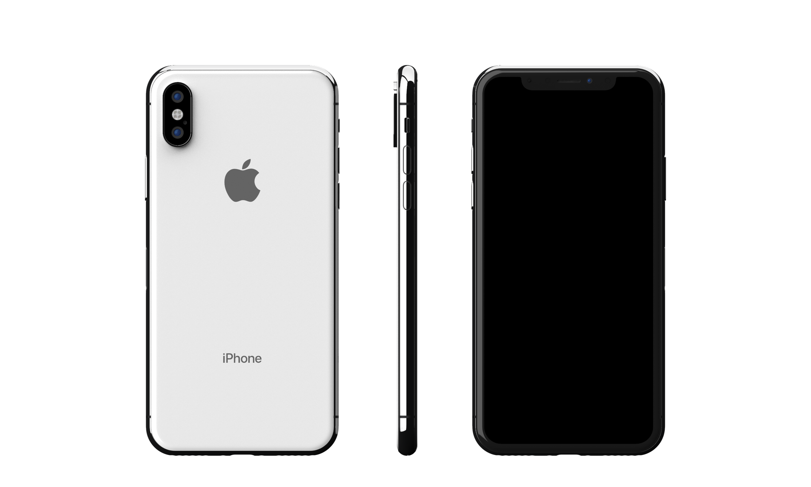
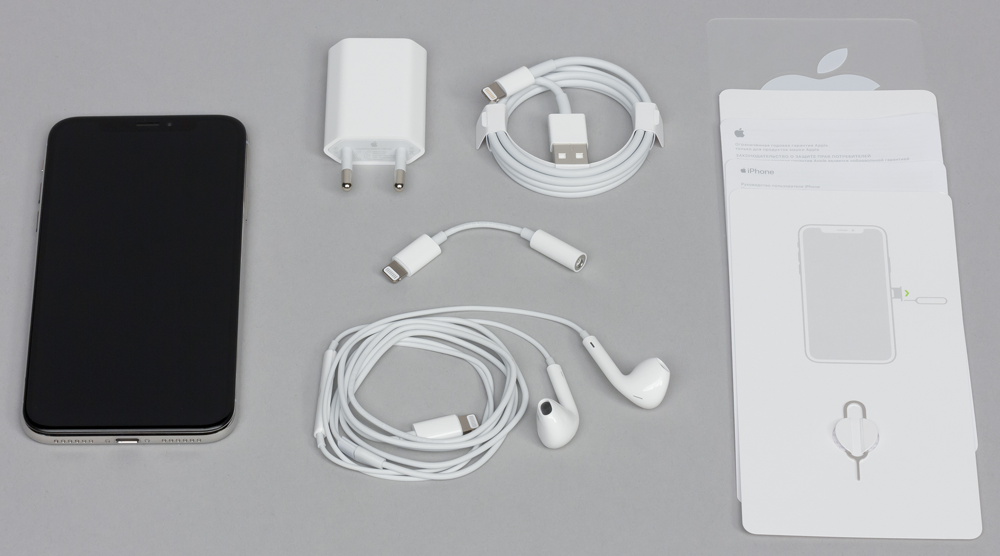

iPhone X

Характеристики
- SoC Apple A11 Bionic (6 ядер, 2 из которых высокопроизводительные и работают на частоте 2,1 ГГц, а 4 — энергоэффективные)
- GPU Apple A11 Bionic
- Сопроцессор движения Apple M11, включающий барометр, акселерометр, гироскоп и компас
- RAM 3 ГБ
- Флэш-память 64/256 ГБ
- Поддержка карт памяти отсутствует
- Операционная система iOS 11
- Сенсорный дисплей OLED, 5,8″, 2436×1125 (458 ppi), емкостной, мультитач, поддержка технологий 3D Touch и отклика Taptic Engine
- Камеры: фронтальная (7 Мп, видео 1080р 30 к/с, 720р 240 к/с) и тыльная с двумя объективами (12 Мп, оптический зум 2х, съемка видео 4К 60 к/с)
- Сотовая связь: UMTS/HSPA/HSPA+/DC-HSDPA (850, 900, 1700/2100, 1900, 2100 МГц); GSM/EDGE (850, 900, 1800, 1900 МГц), LTE Bands 1, 2, 3, 4, 5, 7, 8, 12, 13, 17, 18, 19, 20, 25, 26, 27, 28, 29, 30, 38, 39, 40, 41, поддержка LTE Advanced
- Wi-Fi 802.11b/g/n/ac (2,4 и 5 ГГц; поддержка MIMO)
- Bluetooth 5.0 A2DP LE
- Wi-Fi 802.11b/g/n/ac (2,4 и 5 ГГц; поддержка MIMO)
- Распознавание лица с помощью камеры TrueDepth
- NFC (только для Apple Pay)
- Универсальный разъем Lightning
- Поддержка беспроводной зарядки стандарта Qi
- Литий-полимерный аккумулятор 2716 мА·ч, несъемный
- GPS c A-GPS, Глонасс, Galileo и QZSS
- Габариты 144×71×7,7 мм
- Масса 174 г
Комплектация

- Смартфон
- Блок зарядки
- Провод для зарядки
- Наушникки
- Переходник (с Lightning на 3.5 mm jack)
- Документация